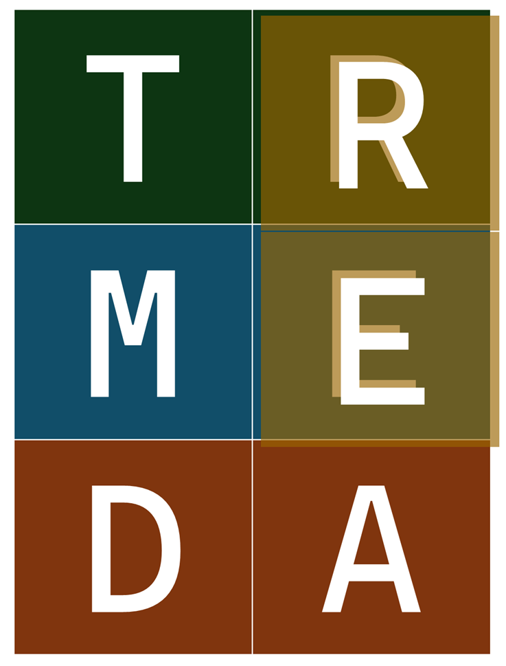
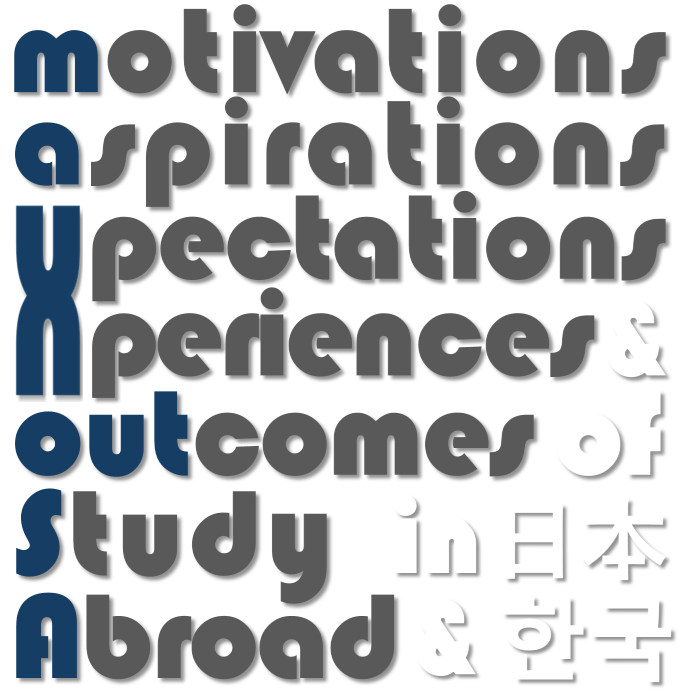
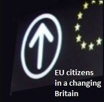
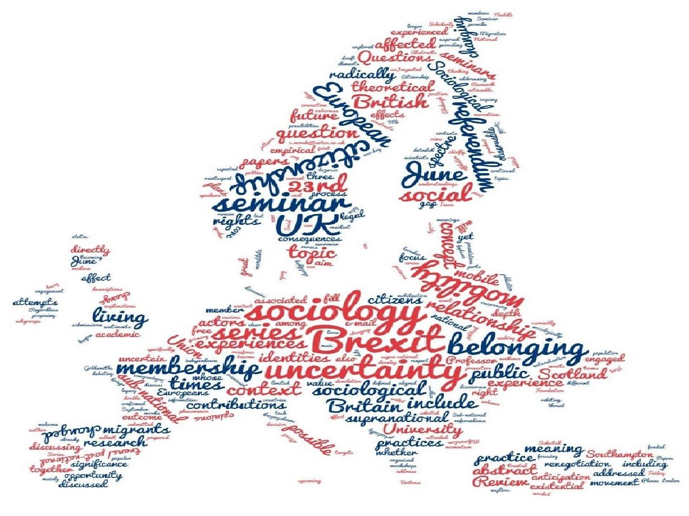
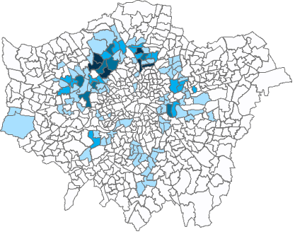
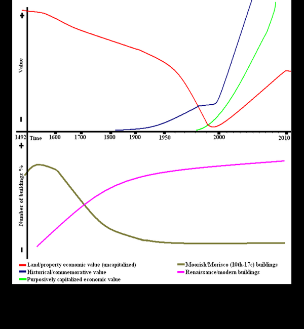
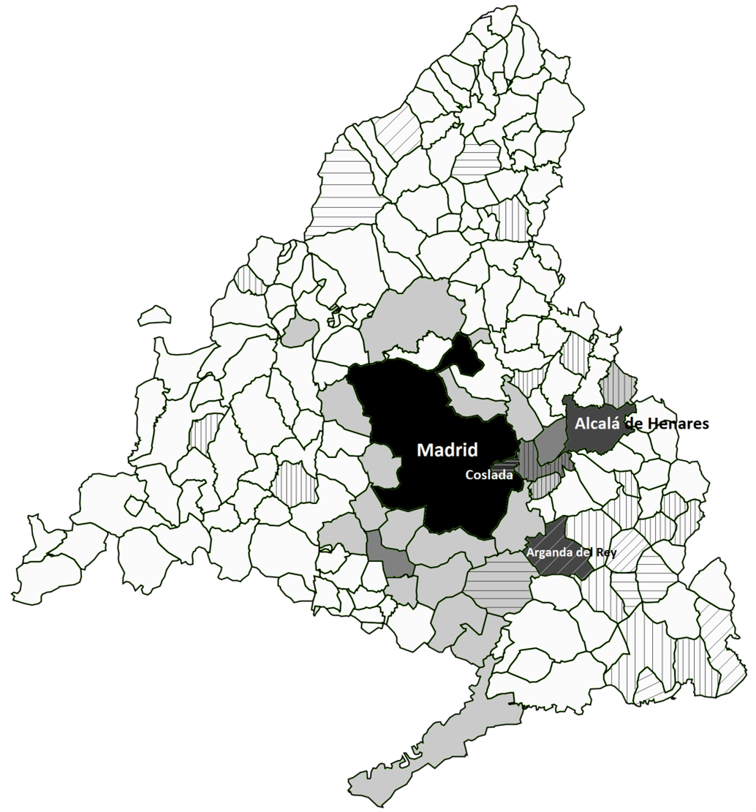

TReMeDaThe project aims to create a curated database of secondary quantitative replication data on the topic of ‘social trust’. Its main deliverables will contribute both to improving practice in quantitative research pedagogy in sociology and related social science disciplines, and to advancing the research reproducibility agenda.
Details
MAXOUT Study AbroadA longitudinal cross-institutional mixed-methods research project investigating the socio-cultural mechanisms linking study motivations, career aspirations, expectations and experiences of international mobility, and the differential social mobility potentials of UK university students enrolled on a Japanese or Korean programme containing a compulsory Study Abroad (SA) year.
Project websiteExtending our research conducted under the 'UK in a Changing Europe' initiative, this project focuses on the health and care practices of EU migrants.
It is crucial to broaden our knowledge of such practices and assess how they are likely to change in light of the uncertainty with regards to international mobility brought by Brexit and the COVID-19 pandemic.

EU in UK IIThe outcome of the EU Referendum and the uncertainty caused by the Brexit process has made the issues addressed in our previous project (see EU in UK I). Building on those findings, this follow-up survey project has the aim of disclosing the reasons, expectations, anxieties and the processes of naturalisation decision-making.
DetailsNon-UK citizen EU nationals living in the UK are arguably the population potentially most affected by the outcome of the Brexit Referendum, yet they will not have a right to vote. This exclusion may lead to other forms of mobilisation and rights-seeking, such as naturalisation. This research project explored these possibilities through an online survey administered in the run-up to the EU membership referendum. The research constituted Work Package 2 of the project Understanding the drivers and consequence of population changes in the UK in the context of a changing Europe.
Details
The sociology of ‘Brexit’This The Sociological Review Foundation funded seminar series taking place during 2016 attempted to ‘think sociologically’ about the already observable and (un)expected consequences of the United Kingdom's vote to leave the European Union. The aim of the seminars was to bring together social scientists, civil society actors and members of the public, whose joint contributions outlined the theoretical and empirical possibilities of a ‘sociology of Brexit’.
Details Project website
Mobilities and citizenshipsUnlike classical forms of citizenship, EU citizenship is one in which the tension between mobility and rights dissolves and the two merge to become the fundamental feature of citizenship. This PhD research project explored this fundamental feature by examining the case studies of Romanian and Hungarian post-Accession migration to the United Kingdom. The two case studies allow for a multi-dimensional comparative analysis of the meanings and practices associated with both mobility and citizenship. Hungary and Romania differ greatly in terms of the post-socialist migration potential and patterns of their citizens, and represent two different EU enlargements (2004 and 2007). The United Kingdom, meanwhile, is a recent and not primary destination country for either. These factors offer great opportunities to examine the different structural factors shaping intra-EU east-west mobility, which may become obliterated when looking at migration streams with other characteristics. Hungary and Romania, at the same time, have similarly complex naturalisation laws favouring ethnic kin living outside the state borders, extending EU citizenship to a large population living outside the EU (e.g. Romanians in the Republic of Moldova or Hungarians in the Ukraine) or facing transitional labour market restrictions in most EU countries (e.g. Hungarians in Romania until January 2014). By comparing the mobility experiences of ‘resident citizens’ and ‘external citizens’ we can also expand our understanding of the ways in which people take advantage of the ‘citizenship opportunity structures’ available to them, and achieve a deeper knowledge of how ethnic and national identities relate to European citizenship. From a critical realist meta-theoretical position the dissertation builds on qualitative data obtained from 56 in-depth interviews with Hungarian and Romanian speakers in London, both ‘ex-resident’ and ‘external’ citizens of the two countries.
Details
Gentrification and urban heritage in Albayzín March 2011 ➟ May 2011This project unites two theoretical frameworks, one from gentrification research and the other from heritage studies, to show how the two reinforce each other in populated urban historical heritage sites. The empirical research site is the Albayzín, the old Moorish neighborhood of Granada (Spain), declared a World Heritage Site by UNESCO in 1994. Findings from the project suggest that gentrification is taken over by a value system dictated by heritage, and this changes the “classical” composition of the gentrifiers and the way the process is being shaped.
Details
Romanians of AlcaláAn ethnographic project exploring phenomena of social integration and differentiation in a Romanian migrant community in the town of Alcalá de Henares, Community of Madrid, Spain.
Details